Father, Forgive Them
The first word from the cross is a prayer for the men driving the nails.
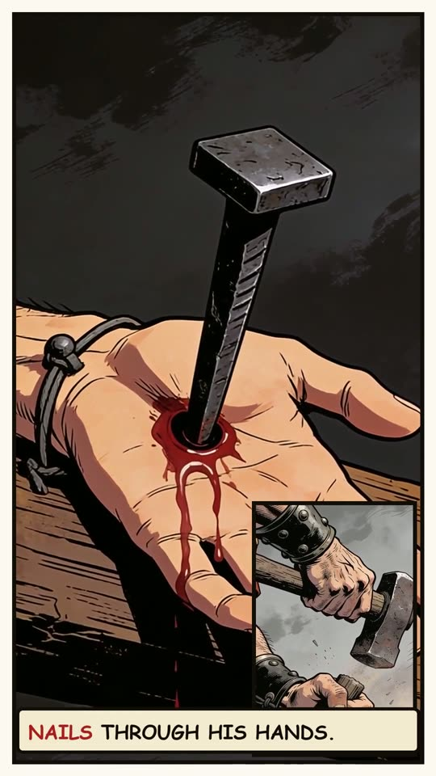
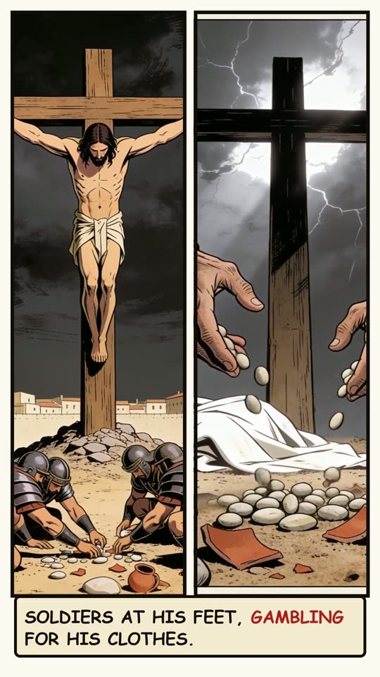
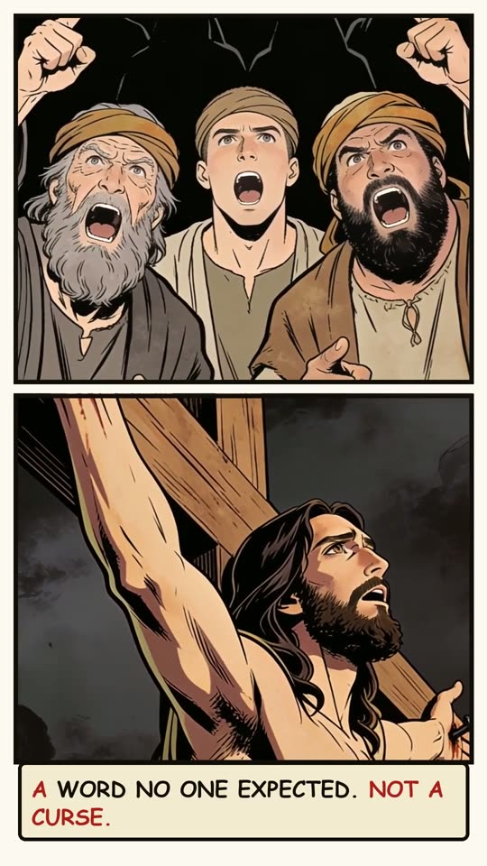
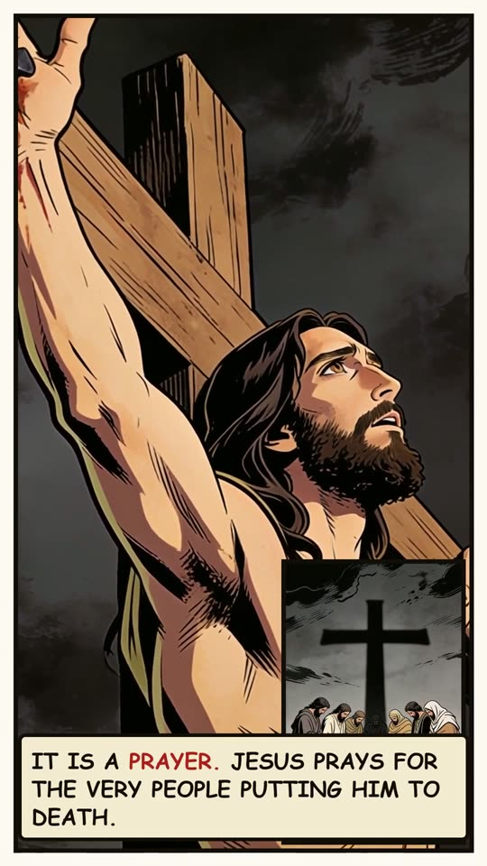
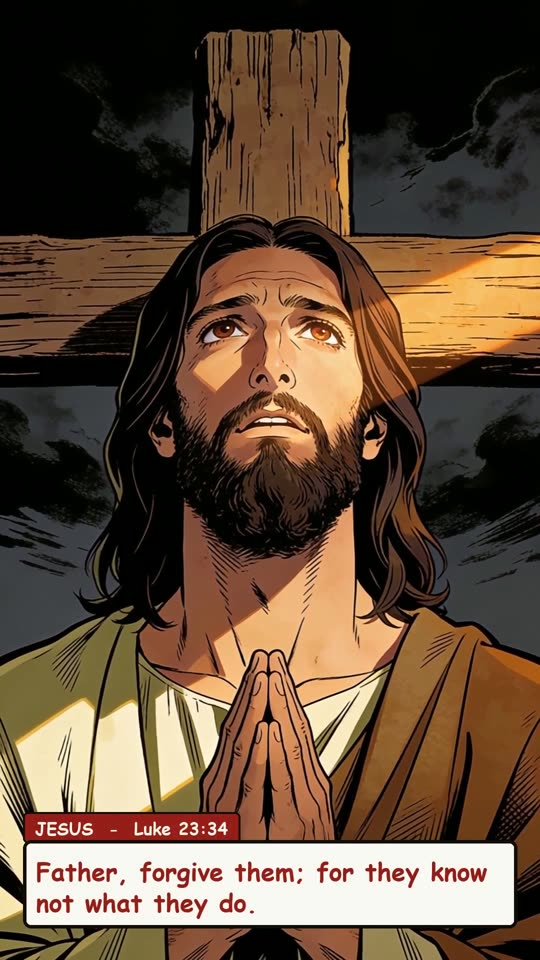
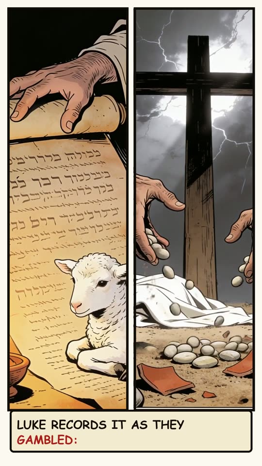
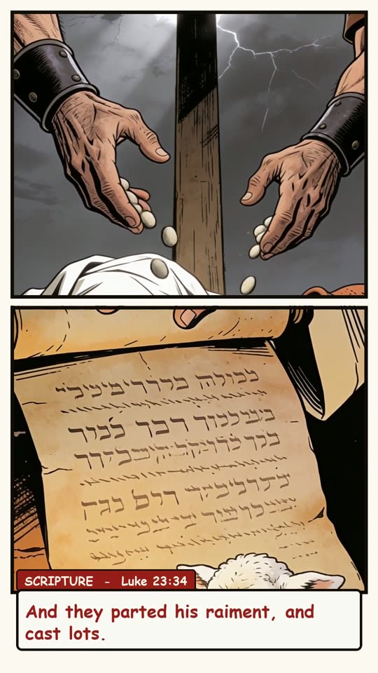
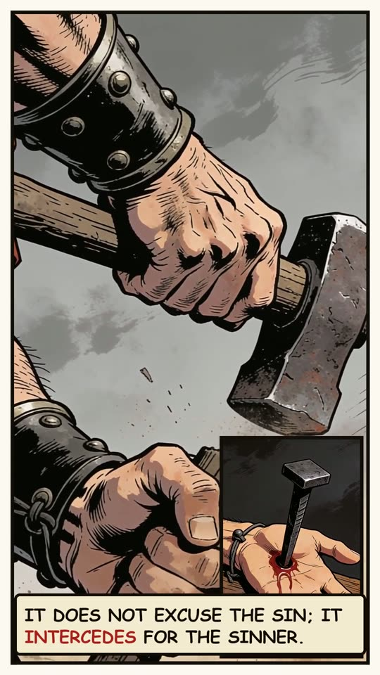
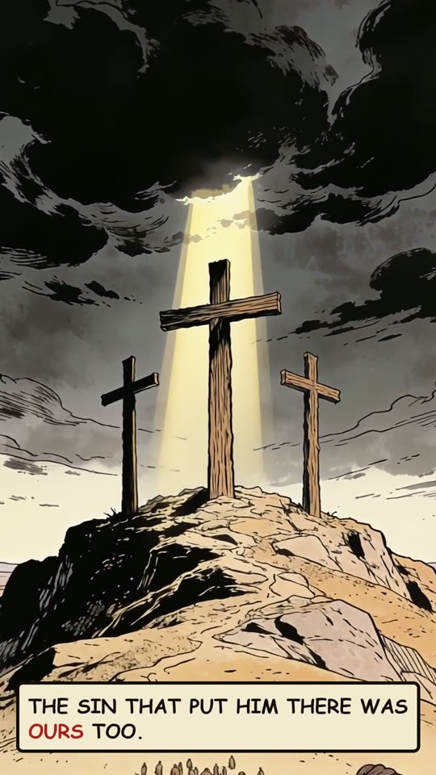
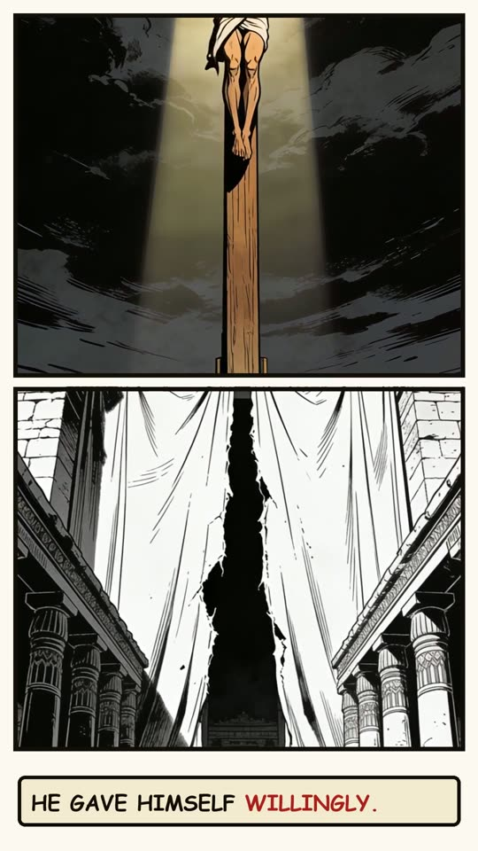
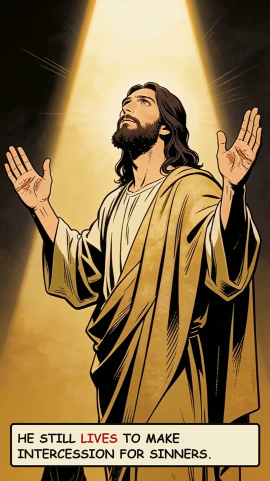
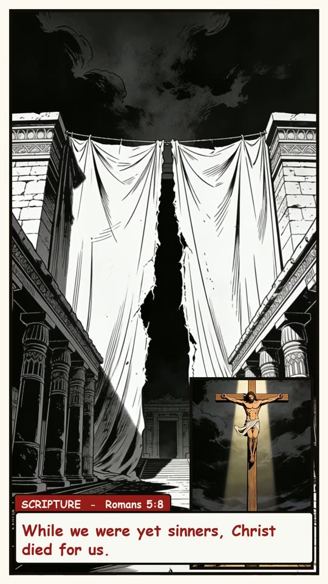
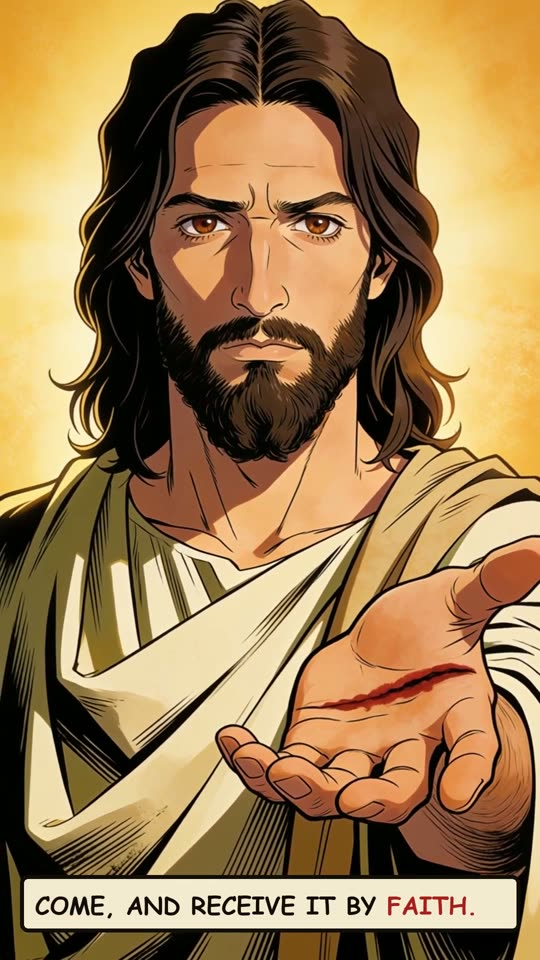
The narration
Nails through his hands. Soldiers at his feet, gambling for his clothes. And from the cross comes a word no one expected, not a curse. It is a prayer. As they divide his clothing, Jesus prays for the very people putting him to death. Father, forgive them; for they know not what they do. Luke records it as they gambled: And they parted his raiment, and cast lots. "They know not what they do" does not excuse the sin; it intercedes for the sinner. And the sin that put him there was ours too. He gave himself willingly, and the Lord who prayed for his executioners still lives to make intercession for sinners. This is the gospel: while we were yet sinners, Christ died for us, pleading mercy before we knew we needed it. That mercy is held out to you now: come, and receive it by faith.